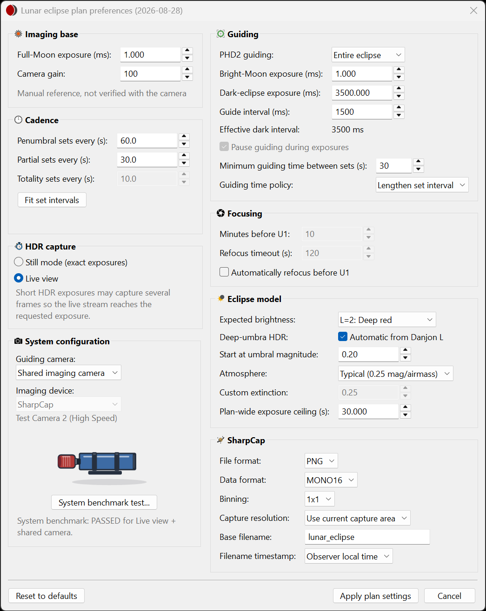
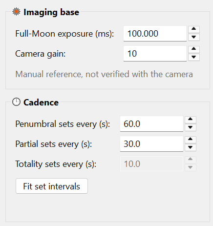
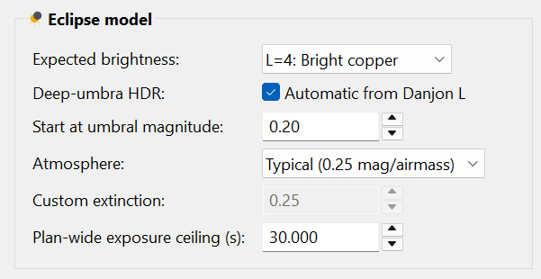

Plan preferences
Set the rig reference, brightness assumptions, cadence and camera configuration used to derive the lunar plan.
Open Plan preferences... from the planner. Unlock the plan first if the controls are disabled. Use Apply plan settings to apply your choices, then review the phase table and save the plan.

Imaging base
Full-Moon exposure (ms) is the exposure reference normalized to a full Moon at the zenith, paired with Camera gain. Manual entries are marked as unverified. Establish a reference for the actual optics, camera and gain; a sample number from another rig is not a calibration.
The exposure model adjusts that reference for shadow brightness and atmospheric extinction. A measurement taken low in the sky includes atmospheric dimming, so it should not be treated as a zenith reference without accounting for that difference.
Typed values are checked when you leave the field, press Enter, use the wheel or arrows, or apply the settings. Invalid numbers remain visible with an explanation. Disabled optional fields do not block Apply, but are checked again when enabled. Gain, separate-camera guide timing and autofocus timing require whole numbers. Changing the reference, gain or extinction changes the calibration status to manual until it matches the stored calibration again; it does not invalidate the equipment benchmark.

Cadence and HDR capture
Choose how often to start imaging sets for penumbral, partial and totality phases. A set may contain several bracketed exposures. Long exposure time, readout and shared guide work can require a longer interval than the requested minimum. Review the calculated phase results. The penumbral value also applies before P1 and after P4. A value for a phase this eclipse does not have is disabled and keeps its stored value.
Still mode (exact exposures) and Live view control the HDR capture path. See Capture mode for their scope and the benchmark.
System configuration and guiding
Select a shared imaging camera or physical guiding camera. Set PHD2 guiding to Off or Entire eclipse. Enter tested bright-Moon and dark-eclipse guiding exposures; the guide interval is a desired start-to-start interval and is extended when needed so it is not shorter than the guide exposure.
Shared-camera exposure values belong to the imaging-camera path. A separate guide camera has its own response and needs its own measured values. See Gear & rig requirements.
Shared-camera guiding accepts fractional milliseconds. Separate-camera guiding uses whole milliseconds. The System benchmark uses its own fixed exposures, so you can edit these values, cadence or the exposure ceiling without repeating a passed test for the same camera configuration.
With the shared camera, guiding always pauses while each imaging set is captured, because the camera cannot take guide frames during an imaging exposure. Pause guiding during exposures is therefore ticked and cannot be changed. With a separate guide camera, guiding normally continues through every set. Tick the box to pause guiding during each set, so that guide corrections do not move the mount during an exposure.
While guiding pauses during sets, Minimum guiding time between sets is the time kept for guiding between the end of one set and the start of the next, 15 seconds unless you change it. Guiding time policy chooses what happens when a phase's sets leave less time than that:
- Warn only keeps the interval, and preflight lists the phases.
- Lengthen set interval starts the sets further apart, so fewer sets are captured. When you apply Plan preferences, and after you change or reset a phase in the phase editor, each affected phase's Minimum interval is raised to the interval that leaves the minimum guiding time, rounded up to a whole second. A Minimum interval you type below that is kept until you next apply Plan preferences; until then the planner still lengthens that phase and marks its row with a warning icon whose tooltip gives the interval used. The phase's set count, the storage estimate and the run all use that interval.
- Resume guiding early, for a separate guide camera only, keeps every set, but guide corrections may move the mount during the last exposures of a set.
Changing Minimum guiding time between sets raises any Sets every value, and any phase's Minimum interval in the phase editor, that leaves less than that time for guiding. Fit set intervals does the same after other changes. Values are only ever raised, and not at all with Resume guiding early, which keeps every set.
Eclipse model
| Setting | How to use it |
|---|---|
| Expected brightness | Choose the Danjon L assumption from 0 (very dark) to 4 (bright). This is an estimate for planning; actual eclipse brightness can differ. |
| Deep-umbra HDR: Automatic from Danjon L | Extend late-partial brackets from illuminated-surface exposures toward the selected deep-shadow brightness target. |
| Start at umbral magnitude | Deep-umbra HDR adds longer exposures to each partial-phase set, so the part of the Moon inside Earth’s shadow is recorded as well as the sunlit part. This setting chooses the umbral magnitude, the fraction of the Moon’s diameter inside the umbra, from which those longer exposures are added. Before it, partial sets use the regular bracket for the sunlit part only. From it on, every partial set uses the full deep-shadow bracket, up to 6 frames, until the umbral magnitude falls back below it after greatest eclipse. The longest exposure is set by the eclipse’s greatest magnitude and the expected brightness (Danjon L), not by this setting. The default, 0.20, covers most of the partial phases; 0.00 starts at U1, and a larger value, up to 0.95, starts later. An earlier start makes partial sets longer and uses more storage, and can bring the guiding-time warnings or Lengthen set interval into play for more phases. The setting is available only for an eclipse with an umbral phase. |
| Atmosphere / Custom extinction | Select the assumed atmospheric dimming. More extinction means a larger low-altitude exposure correction. |
| Plan-wide exposure ceiling (s) | Limit every lunar imaging exposure. The ceiling also limits deep-shadow HDR and per-phase exposure adjustments. |

Choosing the expected brightness (Danjon L)
The Danjon scale describes how dark the Moon looks at mid-totality:
- L=0: Very dark. The Moon is almost invisible, especially at mid-totality.
- L=1: Dark gray or brownish. Surface details are hard to make out.
- L=2: Deep red or rust. The centre of the shadow is very dark; its outer edge is relatively bright.
- L=3: Brick red. The shadow often has a bright or yellowish rim.
- L=4: Bright copper red or orange. The rim of the shadow is very bright and can look bluish.
The value cannot be predicted reliably: it depends mostly on how clear Earth’s upper atmosphere is. As a guide:
- With no large volcanic eruption in the last year or two, most total eclipses rate L=2 or L=3. L=2, the default, is a reasonable choice.
- After a large eruption that put ash and sulphur high into the atmosphere, eclipses are darker, often L=0 or L=1, for a year or more.
- An eclipse in which the Moon passes close to the centre of the shadow usually looks darker than one in which it skims the shadow’s edge.
- Reports from observers of recent eclipses are a good guide, because the upper atmosphere changes slowly.
Each step of L changes the totality exposures four times: a lower value means longer exposures. L also sets how deep the deep-umbra HDR exposures go in the partial phases, and the dark end of the guide exposures. With a low value, totality exposures may reach the plan-wide exposure ceiling. Because each set is a bracket of several exposures, a plan that is one step off still records usable frames, and you can correct the value during the run.
Correcting it during the eclipse. Judge the brightness by eye or with binoculars, not on the camera’s display, whose brightness depends on the exposure. Look at the part of the Moon deep inside the shadow in the late partial phases and early totality, and compare its brightness and colour with the scale. The edge of the shadow is always brighter than its centre, so the Moon looks brighter just after U2 and just before U3 than at mid-totality; the scale refers to mid-totality. Check the saved frames as well: if totality frames are consistently too bright, raise L by one; if the shadowed part is too dark and noisy, lower it by one. Change the value under Estimated Danjon brightness in the run console’s full view; see the run console.
SharpCap and files
Select FITS, PNG or TIFF, data format, binning and capture resolution. Set a base filename; to include spaces, wrap the whole name in quotes, for example "moon session". Choose UTC or observer local time for filename timestamps. The output root comes from the main-window Capture Folder; preflight can change it through Choose folder....
The optional Focusing group is described on the Focusing page. After applying preferences, review all phases: deliberate per-phase overrides remain in effect while untouched settings follow the plan-wide choices.